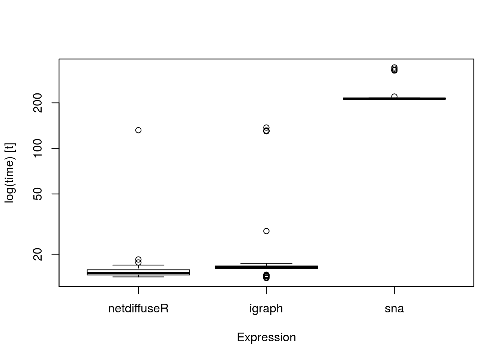
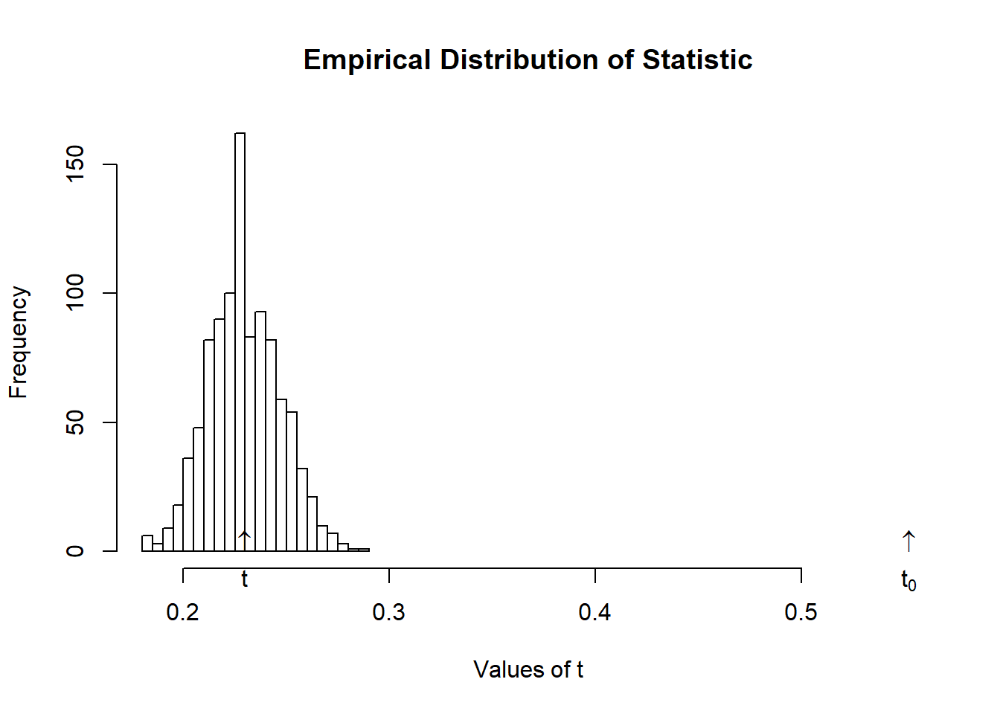
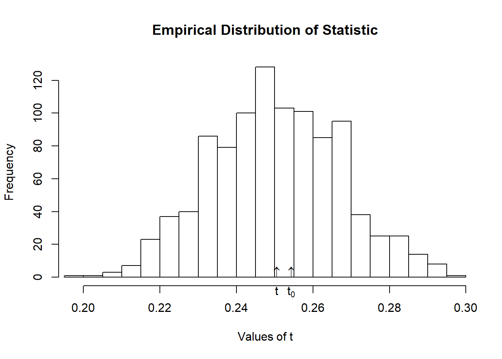

netdiffuseR implements the test in moran, which is suited for sparse matrices.
We can use Moran’s I as a first look to whether there is something happening: let that be influence or homophily.
Using geodesics
One approach is to use the geodesic (shortes path length) matrix to account for indirect influence.
In the case of sparse matrices, and furthermore, in the presence of structural holes it is more convenient to calculate the distance matrix taking this into account.
netdiffuseR has a function to do so, the approx_geodesic function which, using graph powers, computes the shortest path up to n steps. This could be faster (if you only care up to n steps) than igraph or sns:
# Warning in microbenchmark::microbenchmark(netdiffuseR =
# netdiffuseR::approx_geodesic(dgc), : less accurate nanosecond times to avoid
# potential integer overflows

The summary.diffnet method already runs Moran’s for you. What happens under the hood is:
# For each time point we compute the geodesic distances matrixW <-approx_geodesic(medInnovationsDiffNet$graph[[1]])# We get the element-wise inverseW@x <-1/W@x# And then compute moranmoran(medInnovationsDiffNet$cumadopt[,1], W)
This is, if for example time of adoption is independent on the structure of the network, then the average threshold level will be independent from the network structure as well.
Another way of looking at this is that the test will allow us to see how probable is to have this combination of network structure and network threshold (if it is uncommon then we say that the diffusion model is highly likely)
Example Not random TOA
To use this test, __netdiffuseR__ has the `struct_test` function.
Basically it simulates networks with the same density and computes a particular statistic every time, generating an EDF (Empirical Distribution Function) under the Null hyphothesis (p-values).
# The option -copy.first- is set to TRUE. In this case, the first graph will be treated as a baseline, and thus, networks after T=1 will be replaced with T-1.TRUE
# The option -copy.first- is set to TRUE. In this case, the first graph will be treated as a baseline, and thus, networks after T=1 will be replaced with T-1.TRUE
:::
# See the outputtest
::: {.cell-output .cell-output-stdout}
#
# Structure dependence test
# # Simulations : 1,000
# # nodes : 500
# # of time periods : 10
# --------------------------------------------------------------------------------
# H0: E[beta(Y,G)|G] - E[beta(Y,G)] = 0 (no structure dependency)
# observed expected p.val
# 0.5513 0.2514 0.0000
::: :::

Now we shuffle toas, so that is random
# Resetting TOAs (now will be completely random)diffnet.toa(net) <-sample(diffnet.toa(net), nnodes(net), TRUE)# Running the testtest <-struct_test(graph = net, statistic =function(x) mean(threshold(x), na.rm =TRUE),R =1e3,ncpus=4, parallel="multicore" )
# The option -copy.first- is set to TRUE. In this case, the first graph will be treated as a baseline, and thus, networks after T=1 will be replaced with T-1.TRUE
# See the outputtest
#
# Structure dependence test
# # Simulations : 1,000
# # nodes : 500
# # of time periods : 10
# --------------------------------------------------------------------------------
# H0: E[beta(Y,G)|G] - E[beta(Y,G)] = 0 (no structure dependency)
# observed expected p.val
# 0.2714 0.2587 0.4000

Regression analysis
In regression analysis we want to see if exposure, once we control for other covariates, had any effect on the adoption of a behavior.
In general, the big problem here is when we have a latent variable that co-determines both network and behavior.
Unless we can control for such variable, regression analysis will be generically biased.
On the other hand, if you can claim that either such variable doesn’t exists or you actually can control for it, then we have two options: lagged exposure models, or contemporaneous exposure models. We will focus on the former.
Lagged exposure models
In this type of models we usually have the following
Compute Moran’s I as the function summary.diffnet does. For this you’ll need to use the function toa_mat (which calculates the cumulative adoption matrix), and approx_geodesic (which computes the geodesic matrix). (see ?summary.diffnet for more details).
Read the data as diffnet object, and fit the following logit model \(adopt = Exposure*\gamma + Measure*\beta + \varepsilon\). What happens if you exclude the time fixed effects?